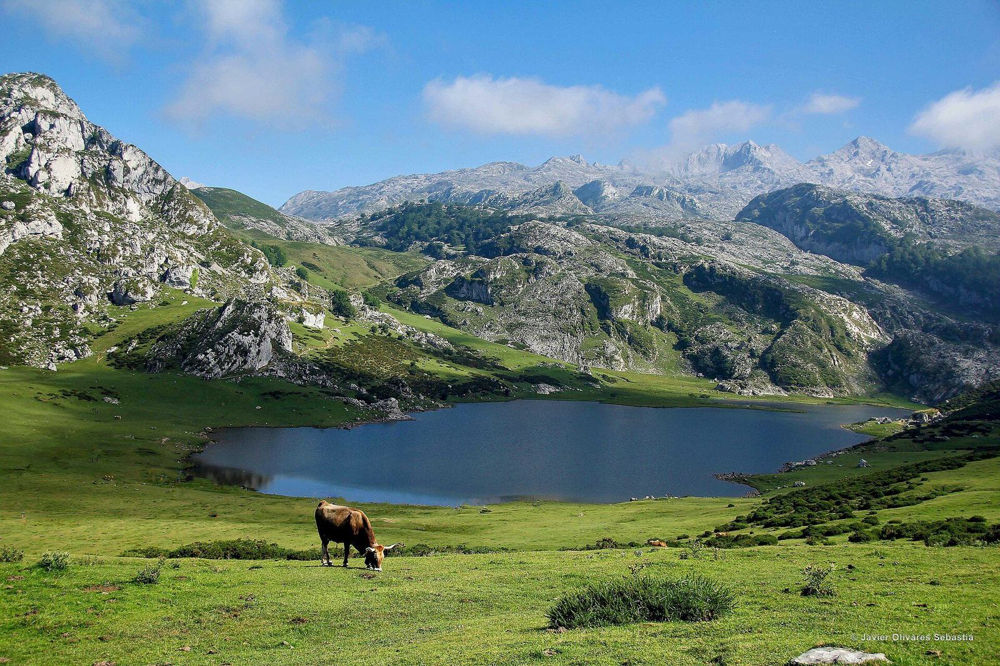
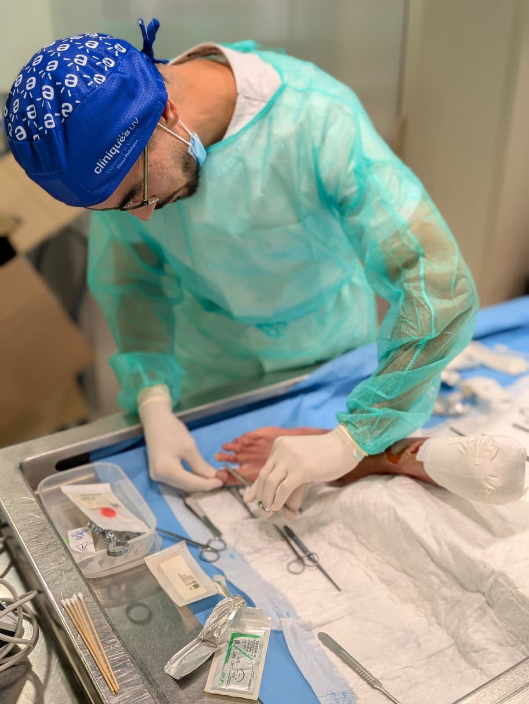
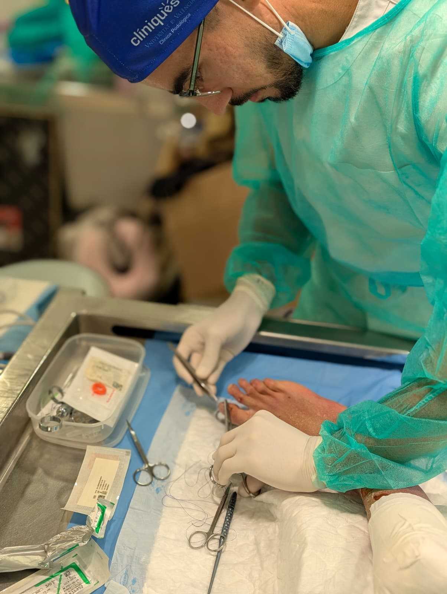
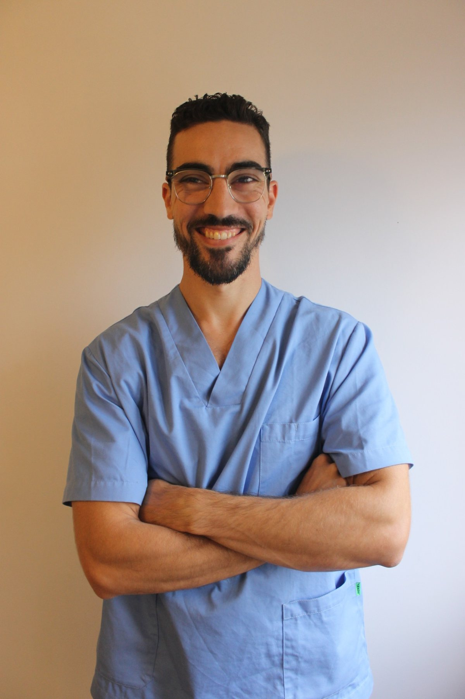
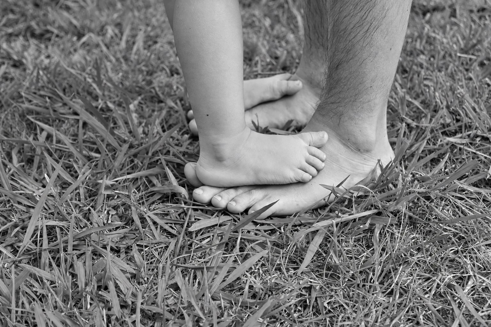
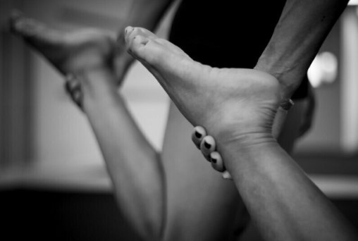
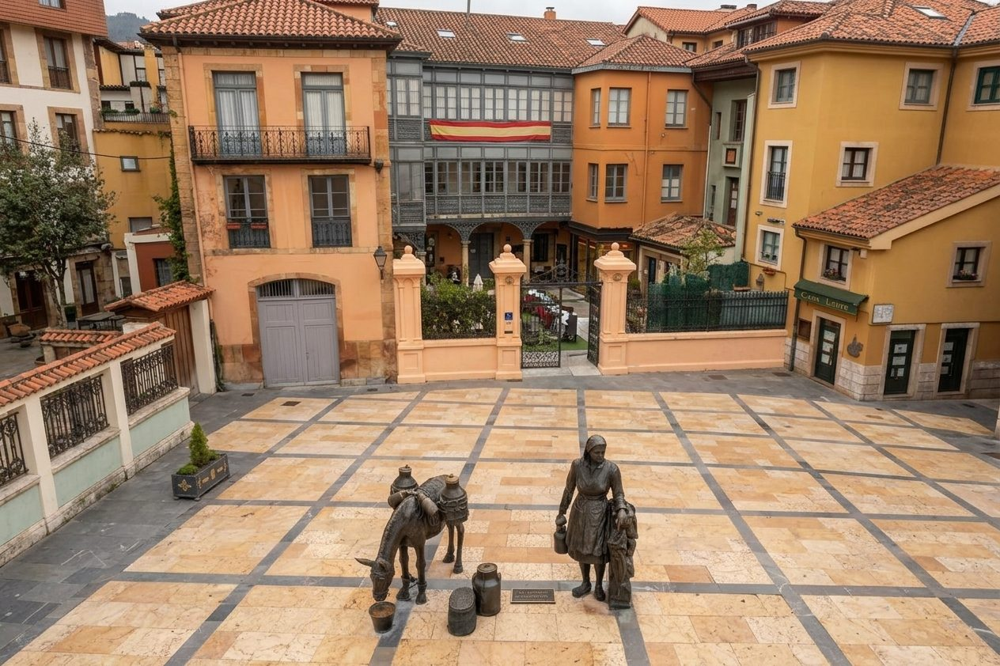

Cirugía podológica · Asturias
Cirugía del pie mínimamente invasiva: menos trauma, mejor estética y una recuperación pensada para que vuelvas a caminar cuanto antes.
— Podólogo colegiado nº 33186 —
Fotos: Catedral de Oviedo — David Agüera · Lagos de Covadonga, Javier Olivares Sebastià (CC BY-SA 4.0)
Caminar, estar de pie todo el día, hacer deporte o simplemente llevar el calzado que te gusta no debería doler. Cuando el tratamiento conservador no es suficiente, la cirugía podológica mínimamente invasiva permite corregir juanetes, dedos en martillo y otras deformidades a través de incisiones muy pequeñas, con menos trauma en el tejido y una recuperación más cómoda.
Como podólogo colegiado, acompaño todo el proceso: valoración inicial, diagnóstico por imagen cuando es necesario, intervención y seguimiento postoperatorio, para que entiendas en cada momento qué se está haciendo y por qué.
Soluciones quirúrgicas dirigidas a las patologías del pie más frecuentes, siempre valorando primero si existe una alternativa conservadora razonable.

Cirugía
PodológicaPendiente: confirmar el listado definitivo de cirugías que se van a ofrecer.
«Mi forma de operar parte de una idea simple: el mínimo trauma posible para el máximo resultado funcional y estético.»David Agüera — Podólogo colegiado nº 33186
Pendiente: confirmar esta cita con David antes de publicarla.
David Agüera · Cirugía Podológica en Asturias
Empecé a interesarme por la cirugía mínimamente invasiva cuando vi que corregir una deformidad del pie no tenía por qué significar semanas de reposo ni una cicatriz larga. Desde entonces, mi consulta gira en torno a esa idea: el mínimo trauma posible para el mejor resultado.
Al ser una consulta pequeña, llevo yo cada caso de principio a fin. La valoración inicial, la cirugía y las revisiones posteriores las haces siempre con la misma persona, no con un equipo distinto en cada visita.
Soy podólogo colegiado nº 33186. Tengo la Microcredencial Universitaria en Cirugía Ungueal y Exóstosis Digitales (Universitat de València), con formación en diagnóstico, planificación quirúrgica y entrenamiento práctico sobre cadáver. Atiendo pacientes de Oviedo, Gijón y Avilés, con seguimiento postoperatorio personalizado hasta el alta.
Pendiente: formación/titulación exacta, años de experiencia y centro(s) donde operas — lo añado en cuanto me lo confirmes.



Dejé atrás el modelo de "reposo absoluto" de la cirugía tradicional del pie. Trabajo con incisiones de apenas unos milímetros e instrumental específico de cirugía percutánea para corregir juanetes, dedos en martillo y otras deformidades, sin necesidad de abrir el pie como se hacía hace veinte años.
Para el paciente, ese cambio de técnica lo cambia casi todo: menos inflamación, cicatrices apenas visibles y, en muchos casos, apoyar el pie mucho antes de lo que se piensa. La idea es que recuperes tu pie —y tu paso— sin que la cirugía se convierta en semanas perdidas.
Nota: los tiempos y resultados concretos dependen de cada caso; revisa este texto antes de publicarlo.

Pide tu valoración inicial y hablamos de qué opciones tiene tu caso.